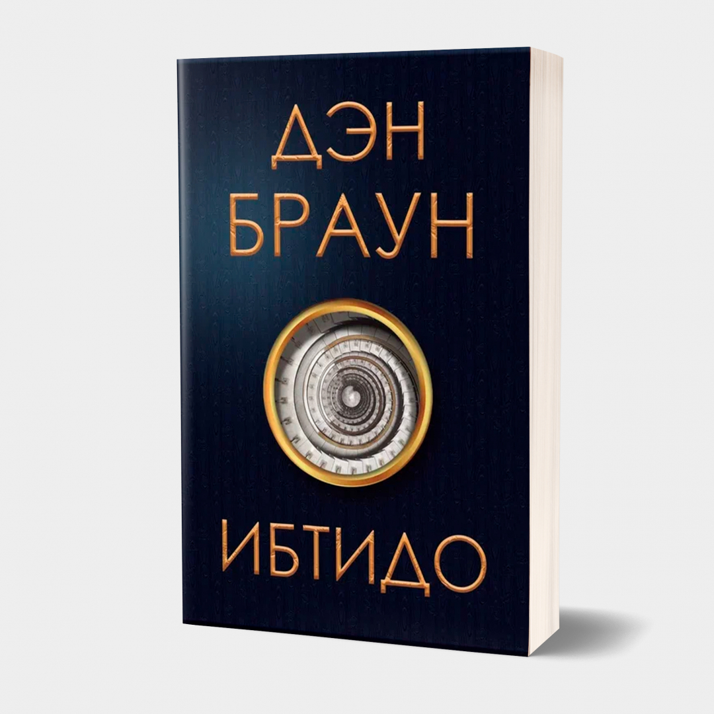
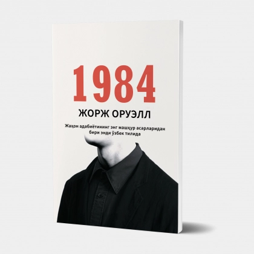
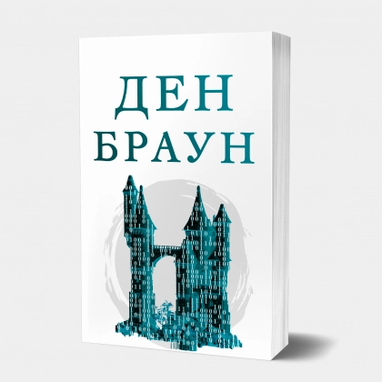

Men o'qiyotgan kitob:
Kapitan Grant bollalari
1864 yil 26 iyulda lord Eduard Glenarvanga tegishli yaxta matroslari ulkan bolg‘a baliqni tutib oldilar. Och ko‘z baliq butunicha yutib yuborgan shisha ichidan ingliz, nemis va fransuz tillarida yozilgan hujjat chiqdi. Dengiz suvi chirita boshlagan bu qog‘ozlardan aniqlanishicha, ikki yil oldin g‘oyib bo‘lgan «Britaniya» kemasi halokatga uchragan. Ekipaj kapitani Grant va ikki dengizchi esa tirik qolgan...
Top-10 asarlar
-

ibtido
Muallif: Den Braun
2017 yil chop etilib butun dunyo bo‘ylab juda ko‘plab shov-shuv va jiddiy bahs-munozaralarga sabab bo‘lgan, «Da Vinchi siri» asari muallifi Den Braunning yana bir mashhur romani endi o‘zbek tilida!
-

1984
Muallif: Jorj Oruell
Jorj Oruellning ushbu romani ilk bora o‘zbek tiliga tarjima qilinib kitobxonlar eʼtiboriga yetkazilmoqda
-

raqamli qal'a
Muallif: Den Braun
Ushbu roman Den Braunning ilk romani bo‘lib, asar shu zahoti Den Braunga butun dunyoga mashhurlikni olib keladi